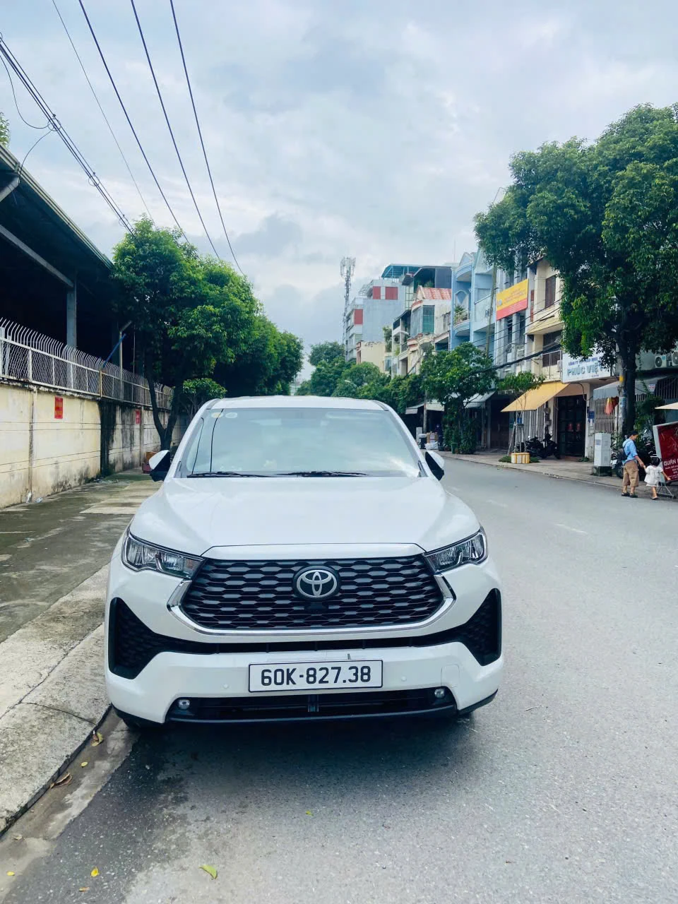
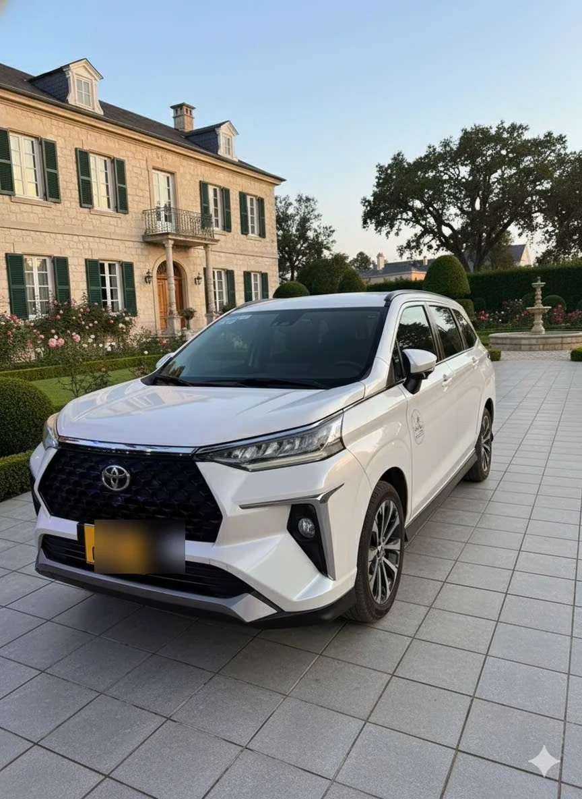

🚗🚐 Thuê xe 4 chỗ và 7 chỗ Thuận An đi Hồ Tràm
Nếu bạn đang tìm thuê xe Thuận An đi Hồ Tràm cho gia đình, nhóm bạn hoặc chuyến nghỉ dưỡng, có thể chọn xe 4 chỗ hoặc 7 chỗ tùy số người và hành lý. Dịch vụ xe riêng có lái, đón tại địa chỉ ở Thuận An và đưa thẳng đến Hồ Tràm, resort, Bình Châu, Hồ Cốc hoặc Xuyên Mộc.
🚗 Xe 4 chỗ Thuận An đi Hồ Tràm
🚘 Xe Phục Vụ — Toyota Vios & Hyundai Accent


✅ Ảnh xe thật · Đời mới 2020–2024 · Vệ sinh sau mỗi chuyến · Điều hòa 2 chiều · Cốp rộng đựng vali & đồ đi biển
Tại sao nên thuê xe 4 chỗ riêng Thuận An đi Hồ Tràm?
Thuê xe 4 chỗ Thuận An đi Hồ Tràm là lựa chọn lý tưởng cho du lịch biển, nghỉ dưỡng The Grand Hồ Tràm, Hồ Cốc, công tác hoặc thăm người thân. Xe riêng Toyota Vios/Hyundai Accent đón đúng giờ tại nhà, đi cao tốc thẳng ~1.5 giờ — không chờ ghép khách, chủ động hoàn toàn.
Khoảng cách ~80km, đi cao tốc ~1.5 giờ. Xuất phát theo giờ bạn chọn, có thể đi cùng ngày nếu đặt sớm. Giá không đổi cuối tuần & ngày lễ.
💰 Bảng giá thuê xe 4 chỗ Thuận An Đi Hồ Tràm
Giá trọn gói không đổi — bao gồm xăng xe, phí cao tốc, tài xế. Không có chi phí ẩn:
| 📍 Điểm đến tại Hồ Tràm | 🚗 1 Chiều | 🔄 Đi Về Trong Ngày | ✅ Đặt Xe |
|---|---|---|---|
| Biển Hồ Tràm trung tâm Bãi biển chính, khu nghỉ dưỡng ven biển |
900.000đ | 1.600.000đ | |
| The Grand Hồ Tràm Strip Resort cao cấp, sân golf, casino |
900.000đ | 1.600.000đ | |
| Khu Hồ Cốc & Hồ Tràm Toàn bộ khu vực ven biển Hồ Cốc — Hồ Tràm |
900.000đ | 1.600.000đ | |
| Casino Hồ Tràm Khu giải trí & trung tâm Hồ Tràm |
900.000đ | 1.600.000đ |
📌 Giá áp dụng giống nhau mọi điểm đến · Không phụ thu cuối tuần/ngày lễ · Xe 7 chỗ xem trang Vũng Tàu!
🚐 Xe 7 chỗ Thuận An đi Hồ Tràm
🚘 Các Dòng Xe 7 Chỗ Phục Vụ




✅ Ảnh xe thật · Đời mới 2020–2024 · Vệ sinh sau mỗi chuyến · Cốp rộng đựng đồ đi biển cả gia đình
📍 Địa điểm đón xe tại Thuận An, Bình Dương
Đón tận cổng nhà / công ty tại tất cả phường Thuận An — không phụ phí dù hẻm sâu:
👉 Khu vực khác Bình Dương vui lòng gọi báo giá trước!
💰 Bảng giá thuê xe 7 chỗ Thuận An Đi Hồ Tràm
Giá trọn gói — cao hơn xe 4 chỗ +50k/chiều & +100k/đi về, đã bao gồm xăng xe, phí đường bộ, tài xế — không có chi phí ẩn:
| 📍 Điểm đến | 🚐 1 Chiều | 🔄 Đi Về Trong Ngày | ✅ Đặt Xe |
|---|---|---|---|
| Hồ Tràm — Bãi biển & Resort Khu nghỉ dưỡng, Hồ Tràm Strip, casino |
950.000đ | 1.600.000đ | |
| Bình Châu — Suối Nóng & Hồ Cốc Tắm bùn, bãi biển hoang sơ, khu du lịch |
1.050.000đ | 1.800.000đ | |
| Xuyên Mộc — Toàn Huyện Bình Châu, Suối Ớt, Bãi Hải Sảnh |
1.000.000đ | 1.700.000đ | |
| Long Điền — Khu vực lân cận Châu Đốc, khu trung chuyển Vũng Tàu |
1.000.000đ | 1.700.000đ | |
| Ở lại nhiều ngày Đưa đón theo lịch trình riêng |
Gọi báo giá riêng | ||
📌 Giá không đổi cuối tuần · Xe 4 chỗ xem trang bên · Đi thêm Vũng Tàu gọi báo giá gói!
⭐ Lợi ích khi thuê xe 7 chỗ
- ✅ Xe riêng 100% — Không ghép khách, chỉ có gia đình/bạn bè
- ✅ 4 dòng xe rộng rãi — Innova/Xpander/Veloz/Stargazer, 3 hàng ghế thoải mái
- ✅ Chỉ +50k so xe 4 — Tiết kiệm mà đủ chỗ cả gia đình
- ✅ Cốp lớn đựng đồ — Vali, túi đi biển, đồ nghỉ dưỡng đều thoải mái
- ✅ Đón tận cổng nhà — Tài xế đến đúng địa chỉ, không phụ thu hẻm sâu
- ✅ Xác nhận nhanh — Gọi/Zalo hoặc điền form, phản hồi trong 15 phút
📍 Đi Hồ Tràm có thể kết hợp những điểm nào?
Hồ Tràm, Bình Châu, Hồ Cốc, Xuyên Mộc là nhóm điểm phù hợp cho lịch trình biển, nghỉ dưỡng và gia đình. Có thể đặt xe một chiều, đi về trong ngày hoặc ở lại nhiều ngày; lịch trình nhiều điểm nên báo trước để xác nhận giá.
Các từ khóa dịch vụ chính: thuê xe Thuận An đi Hồ Tràm, thuê xe Bình Dương đi Hồ Tràm, thuê xe 4 chỗ đi Hồ Tràm, thuê xe 7 chỗ đi Hồ Tràm, thuê xe có lái đi Hồ Tràm, thuê xe đi Bình Châu, thuê xe đi Hồ Cốc, thuê xe đi Xuyên Mộc, thuê xe đưa đón resort Hồ Tràm.